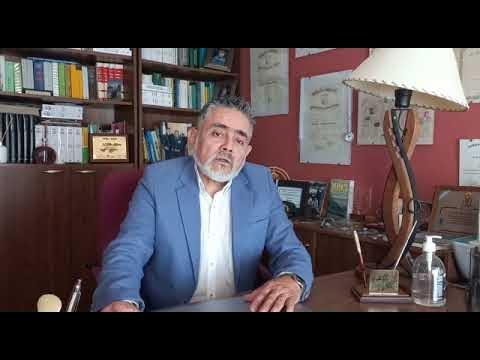
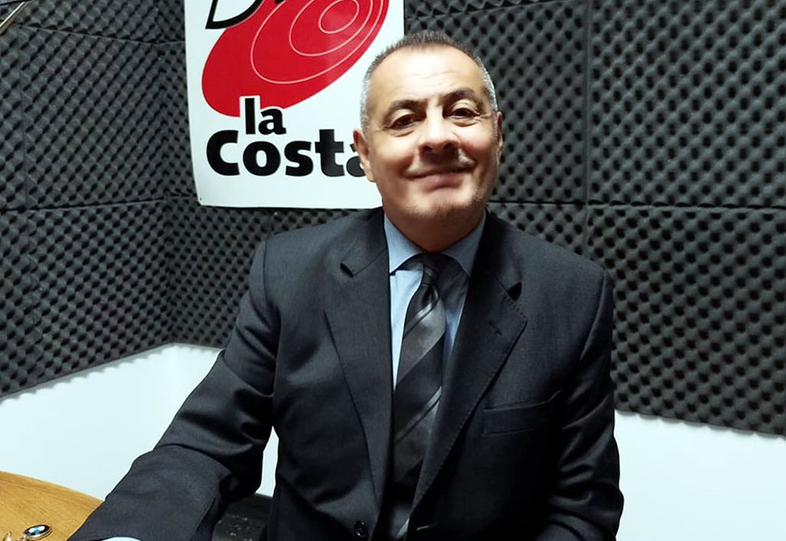

Nazario Roberto Ferreyra: de San Cayetano a la Operación Rosario
Roberto Ferreyra formó parte del Batallón de Infantería de Marina Nº 1, el cual participó de
la operación anfibia denominada “Operación Rosario”. En la mañana del 28 de marzo de 1982,
tropas del Ejército Argentino y de la Armada embarcaron y pusieron rumbo a las islas, su objetivo
era nada menos que desembarcar y recuperar las Islas Malvinas, que se hallaban en manos de la corona
británica desde 1833, es decir casi un siglo y medio de usurpación. El sancayetanense
(que falleció el 30 de mayo de 2003) brindó toda su valía. Una calle lleva su nombre en su terruño natal.
Víctor Alejandro Mutonni
Víctor fue Soldado Clase 62 Veterano de la Guerra de Malvinas.
Perteneció a la Compañía B "Curupaytí" del Regimiento de Infantería 1 "Patricios" en el momento de ser desplegado
en las Islas. Allí, junto a los demás Veteranos, se desempeñó como apuntador de FAP (fusil automático pesado)
cubriendo el sector norte de Puerto Argentino. Fue presidente de la Asociación Civil de Veteranos de Guerra
de Malvinas de Necochea, (PONER LOS AÑOS). Tuvo un rol activo en mantener viva la memoria del conflicto y
en representar a sus compañeros excombatientes.
Armando Julio Maté
Julio Mate fue miembro del Batallón Antiaéreo e Infantería de Marina N° 1 Escuela en la Guerra de Malvinas,
y en abril de 2017 fue declarado Ciudadano ilustre de Necochea por el por el Concejo Deliberante local,
en el marco de la premiación a los necochenses involucrados en la guerra en 1982. Su historia refleja
no solo el coraje en combate, sino también las secuelas invisibles que muchos veteranos enfrentaron al
regresar.
Daniel Pinto
Nacido en Las Heras (provincia de Buenos Aires) en 1963, y radicado durante de una década en Necochea,
ha sido una figura activa en la comunidad de excombatientes. Realizó el servicio militar
en Comodoro Rivadavia, desde donde fue trasladado a las islas en abril de 1982. Se
desempeñó en artillería antiaérea, específicamente en la zona de Pradera del Ganso,
uno de los escenarios más duros del conflicto. Enfrentó ataques de aviones Harrier con cañones de 20
mm manuales y radares rudimentarios, en condiciones extremadamente adversas. En
entrevistas, ha reflexionado sobre el impacto psicológico del conflicto y el valor de
sus compañeros: “Siempre me pregunto por qué yo volví y ellos no”. Fue presidente de la Asociación
y un comprometido activista por los derechos de los veteranos.
Alejandro Lombardi: de manejar tractores en la escuela agraria a operar cañones
antiaéreos
Nacido en Necochea en el año 1962 inició sus estudios secundarios en el Colegio Nacional. A partir
de 4to año se trasladó a estudiar a Miramar, recibiéndose de Técnico Agrónomo en Escuela Agrícola en
Diciembre del año 1981. Ingresó al servicio militar obligatorio en Marzo de 1982 en el GADA 601 de
Mar del Plata ( Ejército, Defensa Aérea ); habiendo solicitado con anterioridad un año de prórroga
para poder finalizar los estudios.
Alejandro estuvo toda la guerra en Puerto Argentino, defendiendo la base con modernos cañones de 35
mm. El entusiasmo de la llegada a las islas derivó en cansancio y finalmente en un agotamiento donde
el único pensamiento posible era desear que terminara la guerra. “Psicológicamente estábamos muy
mal. El resultado lo analizarán los gobiernos, nosotros queríamos que se terminara la guerra”,
señala.
Alejandro recuerda como uno de los momentos más tristes cuando recibieron la orden de destruir el
cañón antiaéreo que los había defendido durante toda la guerra. De allí fue enviado como prisionero
de guerra al aeropuerto y luego fue reenviado a Puerto Argentino donde, junto a otros soldados, los
alojaron en galpones antes de ser enviados a Puerto Madryn a bordo del buque Nordland, el 21 de
junio. Allí, recuerda, el emotivo y cálido recibimiento que tuvieron por parte de los vecinos de
Madryn, quienes les dieron comida antes de ser trasladados a Trelew.
Julio Zapata: Del sueño de navegar en la Fragata Libertad a sobrevivir en el Crucero
General Belgrano

Julio, con sus 17 años, tenía la vocación y el sueño muy claro de “conocer el mar, navegar y viajar
por el mundo”. Para eso ingresó a la Marina en la Escuela de la Armada.
Luego de 3 años de estudio, a fines del año 81 egresó como cabo segundo. Su primer destino fue el
buque escuela Fragata “Libertad”, “después de mucho esfuerzo, sacrificio y estudio, había logrado
uno de mis proyectos de vida, iba a navegar y recorrer puertos del mundo, aquello que había soñado,
y a lo lejos parecía una utopía, se convertía en una realidad. Al regreso de mi primera navegación
de prueba de máquinas a bordo de la Fragata “Libertad”, me encontraba a punto de tomar el tren en la
estación Retiro rumbo a mi provincia natal Córdoba, y me sorprendió el júbilo y algarabía de la
gente que volvía de Plaza de Mayo al grito de “las Malvinas son argentinas”. Cuando me presenté en
funciones me enteré que junto a 12 compañeros habíamos sido asignados al ARA Crucero General
Belgrano. No teníamos demasiada información, la orden de nuestros jefes superiores era mantenernos
siempre en situación de alerta (…). El 2 de mayo se había dado la orden de abortar un ataque. Llegó
el mediodía y el mar se puso más calmo, luego de almorzar tenía unas horas de descanso hasta las 16
hs. en que debía apostarme de guardia. Me recosté a descansar y desperté a las 15:40 hs. para el
relevo de guardia, alcancé a vestirme y de pronto un fuerte estruendo me sacudió y levantó por el
aire, una oleada intensa de calor me sofocó, recuerdo que el humo y olor a pólvora de la explosión
dificultaba la respiración y al caer al piso de cubierta no podía incorporarme, estaba resbaloso,
cubierto de fueloil(petróleo); un enorme boquete, abierto por la onda explosiva del primer torpedo
que ingresó desde las cubiertas bajas en la zona de máquinas de popa, parecía querer tragarnos.
Inmediatamente se cortó la energía eléctrica total del buque, en medio de la oscuridad se escuchaban
los gritos de dolor y de pedido de ayuda; me incorporé con mucho esfuerzo, ayudé al compañero
cercano a hacer lo mismo y un nuevo sacudón nos hizo caer, era el segundo torpedo que impactó en la
proa del buque. A las 17 hs. de aquél 2 de mayo, nuestro glorioso buque, crucero A.R.A. “General
Belgrano” se hundió en las frías aguas del Atlántico Sur, llevándose consigo muchos compañeros y
amigos, hombres de honor y héroes de la Patria. Allí comenzó una odisea de lucha y supervivencia a
bordo de las balsas, con una tempestad de lluvia y ráfagas de viento de más de 80 km/h que
provocaban olas de 8 a 10 metros de altura. El 3 de mayo después del mediodía se escuchó el sonido
del motor de un avión que nos avistó y a partir de allí renacieron las esperanzas.
Guillermo Llugdar: No se olviden de quienes dejaron sus vidas en Malvinas

“Yo fui una persona antes de ir a la guerra y otra al regresar, Malvinas me marcó para toda la vida
y no hay día que no piense en eso….” resumió el actual juez de Garantías, Guillermo Llugdar, quien
en 1982 fue uno de los argentinos que fue a combatir a las islas del sur contra Inglaterra.
Nacido en 1955 Santiago del Estero, con unos años de su niñez residiendo en Honduras por la labor
diplomática de su padre en carácter de embajador, al volver al país Guillermo junto a su familia se
radicó en 1964 en Mar de Plata, donde cursó parte de sus estudios primarios y la totalidad de la
secundaria y la universidad. En 1985 vino a vivir a Necochea, donde desde 1999 está a cargo del
Juzgado de Garantías. “La mía, por la edad que tenía, significó una vivencia totalmente distinta. Ya
ingresar a la “colimba” a los 26 años me conllevó pasarla muy mal los primeros días, porque tenía
que compartir con chicos de 18 años, con otra mentalidad y hasta los suboficiales eran de mi edad o
menores y me tenían a los saltos por ser más grande. Me pregunté más de una vez ¿qué hago acá, en
este manicomio? Había ingresado al servicio militar el 8 de marzo y al mes siguiente estaba en
Malvinas para combatir. Cuando partimos solo nos dijeron íbamos al Sur, y en lo personal empecé a
sospechar que era a Malvinas, cosa que ocurrió… Y ahí mi principal objetivo pasó a ser volver con
vida (…). En las islas le tocó integrar la batería comando del GADA, que fue un objetivo a aniquilar
por los ingleses, ya que tenía el radar. “Lo buscaron desde el primer momento para anularlo y pese a
que tuvimos que cambiar de lugar por un bombardeo cercano, por fortuna no lograron su objetivo.
Soportamos bombardeos casi 70 días, y volví en el último barco que trajo prisioneros al país. Nos
trajeron ocultos y en mi caso me llevaron a la escuela de suboficiales Cabral. Nos tuvieron tres
días dándonos de comer para que engordáramos y en lo personal me los pasé lavándome. Fue muy triste
ese momento… Yo estaba muy enojado con la gente, no entendía que nos ignoraran, los insultaba por el
dolor que me causaba. Durante 10 años no hablamos de Malvinas los que estuvimos allá; muchos se
suicidaron y ya casi son más que los muertos en combate, que a mi entender son más que los
declarados. Malvinas forma parte de nuestro territorio y nos la siguen robando; a otra guerra no
podemos ir porque no somos una potencia, pero en algún momento un gobierno serio debe recuperarlas
por la vía diplomática. Pero por sobre todo les pido a todos que no se olviden de los que dejaron su
vida en las islas.